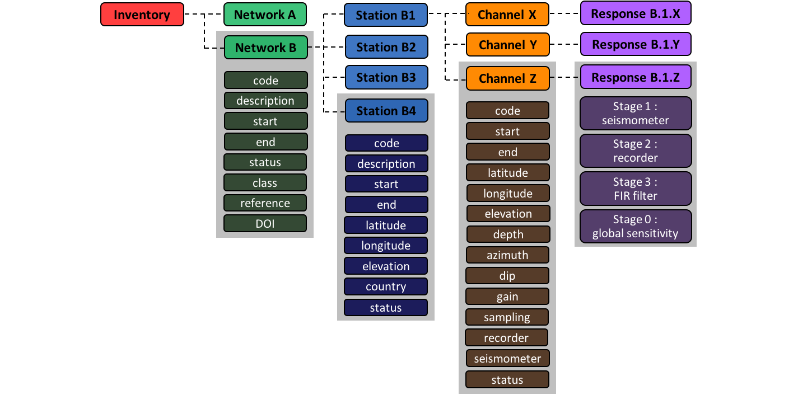
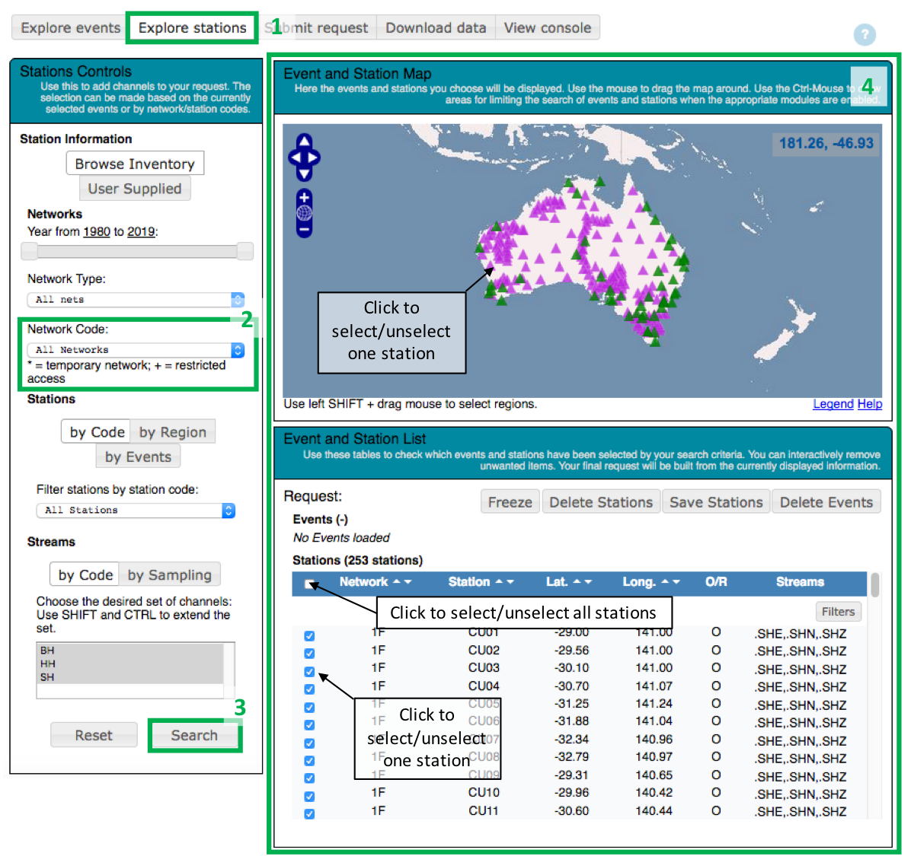
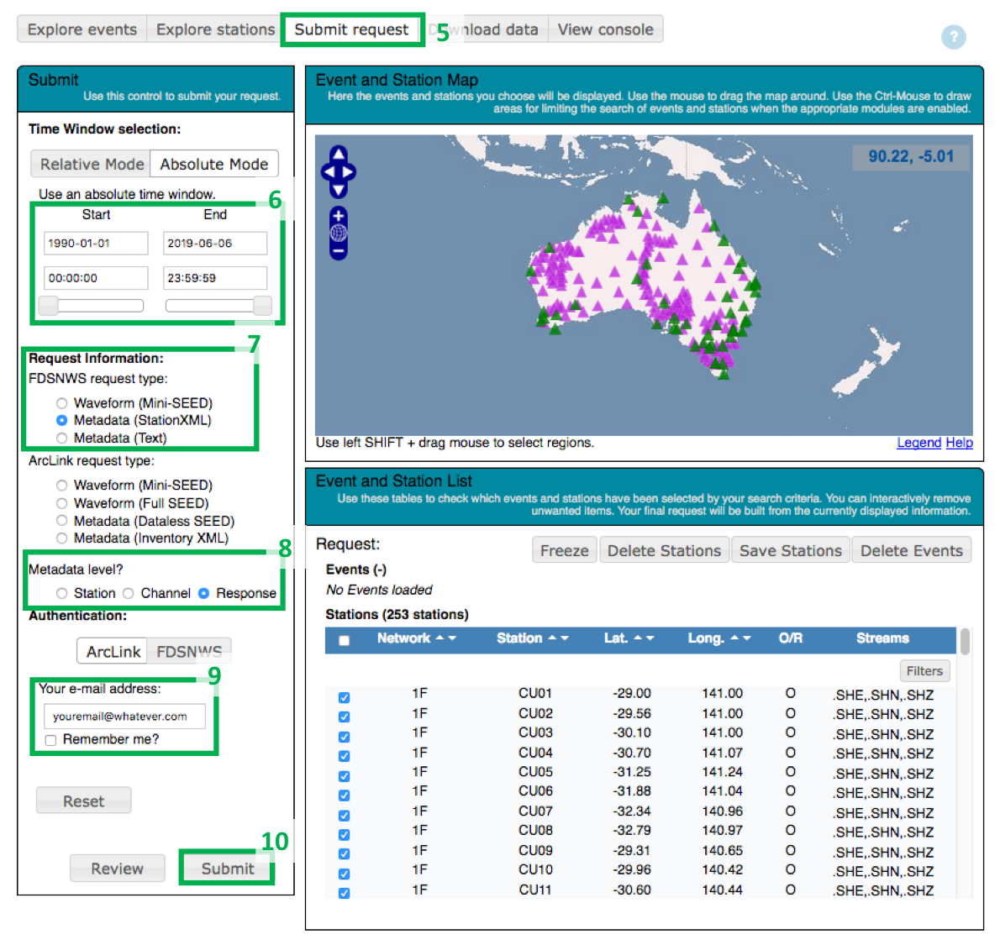
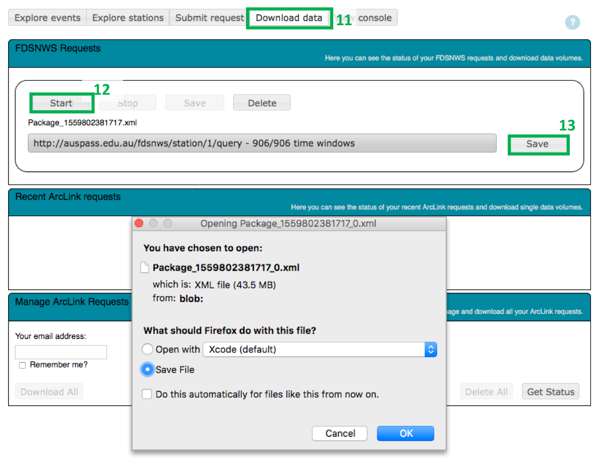

About AusPass metadata
AusPass provides download exhaustive metadata about the seismic datasets (one per array) in AusPass, that can be downloaded with the
WebDC3 graphical explorer (instructions
below) or with a
standard FDSN request using the
station service. AusPass metadata follow the
FDSN stationXML schema version 1.0. AusPass metadata can also be downloaded as a text file with less details (instrumental responses not included). According to the FDSN stationXML schema, the metadata is organized in 5 levels, imbricated one in another as russian dolls :
- the inventory is the higher level of information, which contains all sublevels,
- the network level lists the seismic arrays available in the inventory; it also contains the references and dois needed to acknowledge each dataset,
- the station level gives information about the stations present in an array, including their name and geographical coordinates,
- the channel level gives information about the instrumentation used and the time-period of the measurements,
- the instrument response allows to convert the numerical data into a geophysical signal, such as a displacement, a velocity or an acceleration.
Figure 1 : Organisation of the AusPass metadata according to the FDSN stationXML schema

- Step 1: To start the metadata selection, go on the AusPass data page and click on the "Explore stations" tab of the WebDC3 graphical explorer
- Step 2: In the "Stations controls" panel on the left of the screen, select the network(s) of your choice using the "Network Code" dropdown menu.
- Step 3: Click "Search" at the bottom of the page.
- Step 4: Check your selection of stations in the "Event and station list" dropdown menu. You can select/unselect all stations with a click on the case located at the right of the station list header. You can select/unselect each station with a click on the station symbol on the map, and/or the case located at the right of the station line in the station list.

- Step 5: Click on the "Submit request tab".
- Step 6: In the "Submit" panel on the left of the screen, indicate a time-period that covers your data selection. The lifetime of each array is available in the AusPass metadata archive displayed on our homepage.
- Step 7: In the "Submit" panel on the left of the screen, select a request. We encourage to make FDSNWS request type. Within this category, you can either choos eto download the metadata as station XML (the native format) or as text (instrument responses not included).
- Step 8: In the "Submit" panel on the left of the screen, select the level of information needed: station, channel or response (stationXML only).
- Step 9: In the "Submit" panel on the left of the screen, indicate your email adress.
- Step 10: Click "Submit" at the bottom of the page.

- Step 11: Click on the "Download data" tab at the top of the page.
- Step 12: Click on "Start".
- Step 13: Click on "Save".

Congratulations, your download is complete!